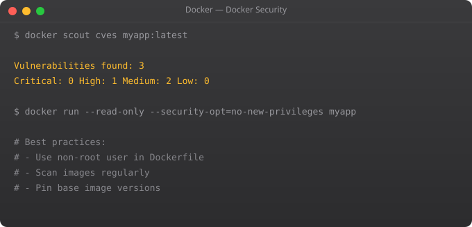

A Docker CI/CD pipeline looks like this: developer pushes code, GitHub Actions builds the Docker image, runs tests inside the container, scans for vulnerabilities, and if everything passes, pushes the image to a registry. The entire flow is automated, consistent, and reproducible. No more "it passed on my machine."
name: Build and Push Docker Image
on:
push:
branches: [main]
pull_request:
branches: [main]
jobs:
build:
runs-on: ubuntu-latest
steps:
- name: Checkout code
uses: actions/checkout@v4
- name: Login to Docker Hub
uses: docker/login-action@v3
with:
username: ${{ secrets.DOCKERHUB_USERNAME }}
password: ${{ secrets.DOCKERHUB_TOKEN }}
- name: Set up Docker Buildx
uses: docker/setup-buildx-action@v3
- name: Build and push
uses: docker/build-push-action@v5
with:
context: .
push: ${{ github.ref == 'refs/heads/main' }}
tags: |
${{ secrets.DOCKERHUB_USERNAME }}/myapp:latest
${{ secrets.DOCKERHUB_USERNAME }}/myapp:${{ github.sha }}
cache-from: type=gha
cache-to: type=gha,mode=max - name: Build test image
run: docker build --target test -t myapp:test .
- name: Run unit tests
run: docker run --rm myapp:test npm test
- name: Run integration tests
run: |
docker compose -f docker-compose.test.yml up -d
docker compose -f docker-compose.test.yml run --rm tests
docker compose -f docker-compose.test.yml down - name: Scan for vulnerabilities
uses: aquasecurity/trivy-action@master
with:
image-ref: myapp:${{ github.sha }}
format: sarif
output: trivy-results.sarif
severity: CRITICAL,HIGH
exit-code: 1 # Fail pipeline on CRITICAL vulnerabilitiesIn Part 11, we explore Docker Swarm — Docker's built-in orchestration for running containers across multiple hosts, load balancing, and achieving high availability without Kubernetes.
With Apple Silicon Macs in developer hands and ARM servers becoming popular in the cloud (AWS Graviton, Raspberry Pi clusters), building multi-architecture images is increasingly important. Docker Buildx makes this straightforward.
# Set up multi-arch builder
docker buildx create --use --name multi-arch-builder
# Build and push for both AMD64 and ARM64
docker buildx build \
--platform linux/amd64,linux/arm64 \
--tag myrepo/myapp:v1.0.0 \
--push .
# Verify the manifest
docker buildx imagetools inspect myrepo/myapp:v1.0.0name: Build Deploy
on:
push:
branches: [main]
tags: ['v*']
env:
AWS_REGION: us-east-1
ECR_REPOSITORY: my-app
jobs:
build-push-deploy:
runs-on: ubuntu-latest
steps:
- uses: actions/checkout@v4
- name: Configure AWS credentials
uses: aws-actions/configure-aws-credentials@v4
with:
aws-access-key-id: ${{ secrets.AWS_ACCESS_KEY_ID }}
aws-secret-access-key: ${{ secrets.AWS_SECRET_ACCESS_KEY }}
aws-region: ${{ env.AWS_REGION }}
- name: Login to Amazon ECR
id: login-ecr
uses: aws-actions/amazon-ecr-login@v2
- name: Build and push
env:
ECR_REGISTRY: ${{ steps.login-ecr.outputs.registry }}
IMAGE_TAG: ${{ github.sha }}
run: |
docker build -t $ECR_REGISTRY/$ECR_REPOSITORY:$IMAGE_TAG .
docker push $ECR_REGISTRY/$ECR_REPOSITORY:$IMAGE_TAG
- name: Run tests
run: docker run --rm $ECR_REGISTRY/$ECR_REPOSITORY:${{ github.sha }} npm test
- name: Deploy to server
if: github.ref == 'refs/heads/main'
run: |
ssh user@server "IMAGE_TAG=${{ github.sha }} docker compose pull && docker compose up -d" - name: Build with cache
uses: docker/build-push-action@v5
with:
context: .
cache-from: |
type=gha
type=registry,ref=${{ env.REGISTRY }}/myapp:cache
cache-to: |
type=gha,mode=max
type=registry,ref=${{ env.REGISTRY }}/myapp:cache,mode=max
push: true
tags: ${{ env.REGISTRY }}/myapp:${{ github.sha }}Docker ensures that your CI environment is identical to production. When you build and test inside a Docker container, you eliminate 'works on CI but not in production' issues. Docker also makes CI faster — you cache layers between runs so dependencies are not reinstalled on every pipeline execution.
A GitHub Actions workflow is a YAML file in .github/workflows/ that defines automated steps triggered by events like code push or pull request. A Docker workflow typically: checks out code, logs into a registry, builds the image, runs tests inside the image, scans for vulnerabilities, and pushes to a registry if tests pass.
Use Docker's cache-from feature. In GitHub Actions, use actions/cache to cache Docker layers between workflow runs. With Docker Buildx, you can use --cache-from type=gha and --cache-to type=gha to use GitHub Actions cache. This prevents reinstalling dependencies on every build, cutting build times dramatically.
Docker Buildx is an extended build command that supports multi-platform builds, better caching, and BuildKit features. Use docker buildx build instead of docker build to get access to --platform (build for linux/amd64 and linux/arm64 simultaneously), --cache-from and --cache-to options, and better build performance.
Build the image, run a container from it, execute your test suite inside the container, and fail the pipeline if tests fail. Use docker run --rm my-image npm test for test execution. For integration tests, use docker compose up with your full stack, run tests against it, then docker compose down.